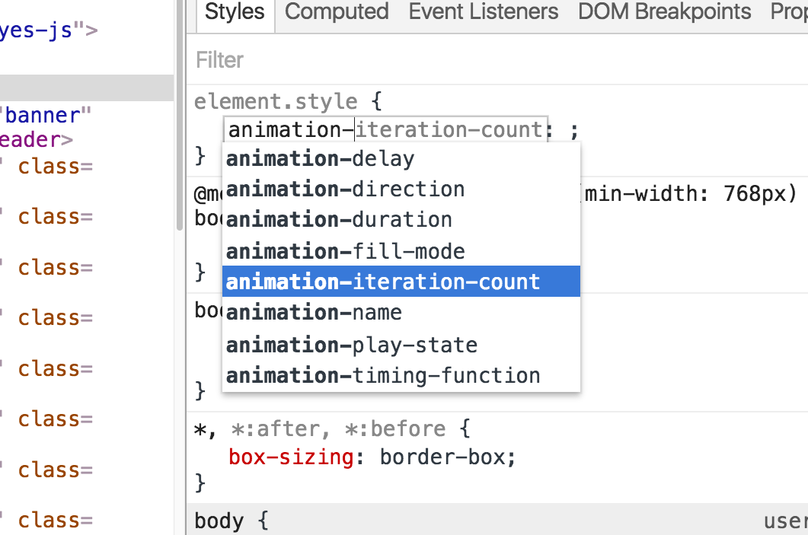

Chrome DevTools
Optimise your Web Development Workflow
Originally given at ffconf 2016, watch the talk here
Umar Hansa / @umaarYou might also like these slides on browser automation in JavaScript
About Me
Current
A few things I like...
- People leave on time
- Hack days are not just fixing technical debt
- Open Source github.com/springernature
- github.com/springernature/frontend
DevTools Tips
A developer tip, in the form of a gif, in your inbox each week.
123 tips posted so far! 🎊
Subscribe here:
umaar.com/dev-tips
Or search for 'chrome dev tips'
What we will briefly look at:
- CSS
- Animation
- Accessibility
- Performance
- Development Workflows
- Customising DevTools
- Extra
About this talk
- Lots of media 📺
- Slides will eventually be online 🕸
- Canary / some features are subject to change ❗
- >170 slides (more than the conference talk!)
What is DevTools?
DevTools is a web app containing a set of functionality to aid with the debugging of webpages
Why DevTools?
- An efficient development process E.g. live edit
- Strong render performance tooling E.g. JavaScript execution during scrolling
- A JavaScript playground environment
Panel Overview
9 slides of screenshots, skim through
CSS
Viewing and editing styles
Autocomplete for properties, and property values
Trigger Pseudo states
a:hover {
color: blue;
}
Element Class Toolbar
- Discover available CSS classes
- Add new CSS classes
- Toggle classes on/off
Colour picker
🔲 Shadow Editors
Style Rule Toolbar
Quick access to common CSS propertiesAnimation
3 Parts to this
- Recording an animation
- Playing an animation
- Modifying an animation
Record an animation
Playing an animation
Modifying an animation
Modify animations by changing their timing, delay, duration, or keyframe offsets
Cubic Bezier Editor
Easings for daysAccessibility
Reasonable contrast ratio

Text
Back to Accessibility Inspection in general
Without an extension...
Accessibility Inspector
Performance
Traditionally, performance was all in the network
But there's more to it
DevTools can help with this. It has these frontend perf tools:
DevTools and Frontend Performance
Tools for analysing your site as it runs
FPS Meter
Need a slow page to demo this
- Longest Wikipedia page (list of planets)
- Box shadow on each list element
- View it on a retina display
- Zoom out of the page
Paint Profiler
How exactly does a browser draw your page?
Draw calls - What functions are being called by the browser
To enable:
- Check the 'Paint' checkbox in the Timeline panel
- Record!
- Click a paint event
Timeline Viewer
chromedevtools.github.io/timeline-viewer/Paint Flashing
Quickly identify undesired browser paints
Line Level Profiling
DevTools supports both CPU and Network throttling
Console Timing
Timeline Marking
Network Timing Breakdown
perf/audits
github.com/perfs/audits
There's more
- Scroll Bottlenecks
- JavaScript Heap Snapshots
- CPU Profiler
- Performance Audits
- Paint Flashing
- Layers Panel
- Network Timing Breakdown
- Filmstrip recording
- Layer Border Outlines
Development Workflow
Workspaces
❗Hello online viewer This was a live demo, this page explains the feature: umaar.com/dev-tips/123-workspaces-2-0
Sourcemaps
Live Sass
Go to member
Live Edit with JavaScript
umaar.github.io/devtools-animated-2016/#/38A DevTools slide referencing another DevTools slide wat
Customising
Extra
Advanced Network Filters
Smart Console
Proactive JavaScript Compilation
Console API
Blackboxing
This works with stepping in and out of code
Request Blocking
Inspecting Function Scope
const variable1 = 1;
const variable2 = 2;
// Logging an object, containing a function
// But what variables does myFunction have access to?
console.log({
myFunction() {
}
});
Device Screenshots
CSS Coverage
❗Hello online viewer This was a live demo, this page explains the feature: umaar.com/dev-tips/121-css-coverage/
Node.js debugging
❗Hello online viewer This was a live demo where I showed Node.js debugging. See:
- CSS coverage
- Node debugging with live edit
- node.js function source
Thank you
umaar.com/dev-tipsTwitter: @umaar
umar.hansa@gmail.com for feedback or ideas
You might also like these slides on browser automation in JavaScript